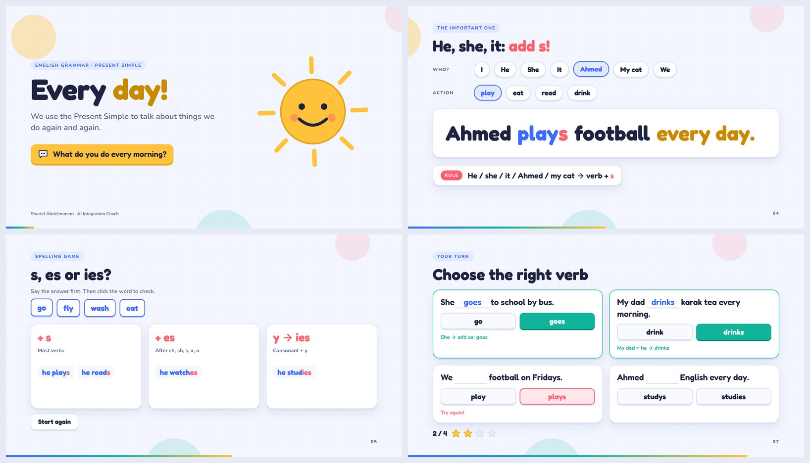
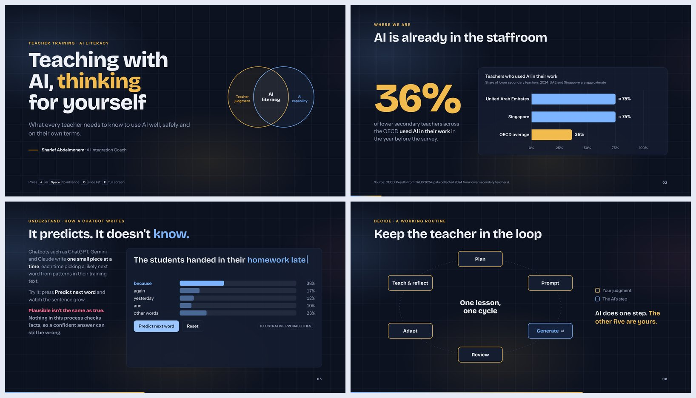

Present Simple: Every Day!
Sentence builders, a spelling sort game, a quiz with stars and a pair-talk timer.
Open the deckA skill for Claude, ChatGPT and Gemini that turns a topic and an audience into an animated, interactive presentation you can run live in a workshop or classroom. Open an example below and present it straight from your browser.

Sentence builders, a spelling sort game, a quiz with stars and a pair-talk timer.
Open the deck
Sourced TALIS 2024 data, a live word-prediction demo, flip cards and the UNESCO framework.
Open the deckIn a deck: → / Space next · ← back · O slide list · F full screen · R replay